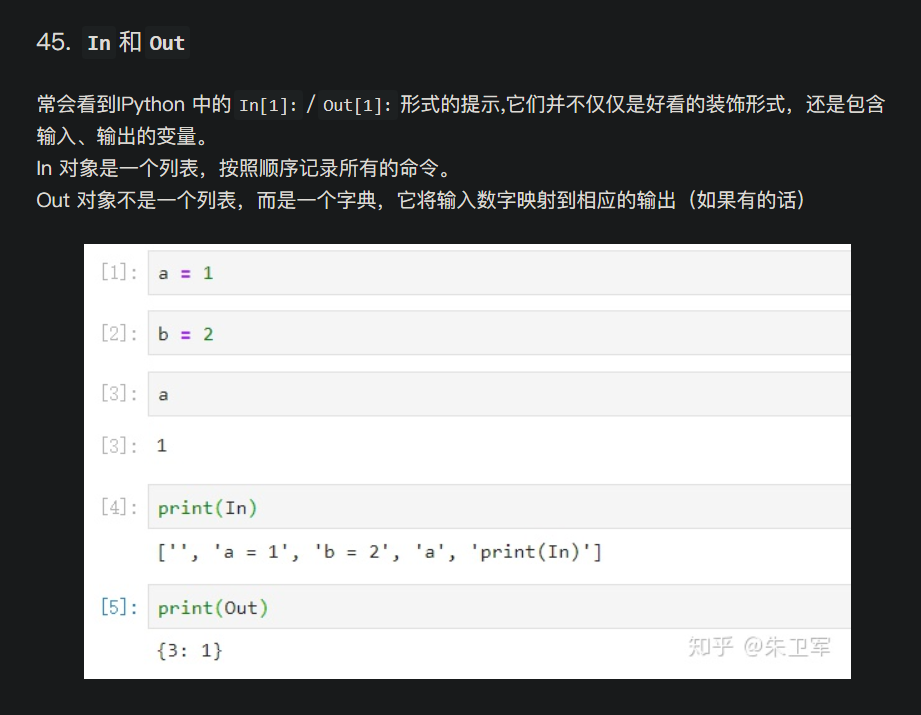
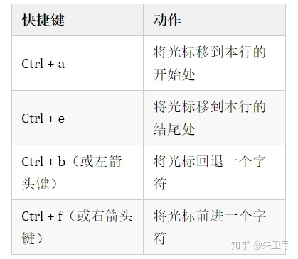

Ipython
IPython 是一种基于 python 的交互式解释器，提供了强大的编辑和交互能力。
对于对象功能的查询操作，Ipython 提供了两种方法：
object?：返回变量的详细信息，查询变量类型或者函数帮助object??:与上一个功能相似，还可以查看函数或者模块对象的源代码
Ipython 中有一种魔术命令，相当于提供了一种简便进行交互的方式。魔术命令分为两种：
- 以%开头，是作用于行的魔术命令
- %pdoc 打印对象的文档字符串
- %quickref#查看语法和魔法命令
- %magic:获取所有魔法命令及其用法
- %timeit#测量语句的执行时间
- %run test.py#运行 python 程序（脚本）
- %load test.py#导入文件
- %paste #从剪切板运行代码
- %cpaste #防止粘贴错误，允许查看并运行
- %save path n1,n2,n3:保存指定的 cell
- %bookmark:将常用目录保存为别名，方便使用
- 以%%开头，表示在整个 cell 单元起作用
- %%timeit#测量 cell 的执行时间
- %%latex:latex 渲染
- %%markdowh
- %%writefile:将单元格文件写入指定文件中
#设置所有单独一行的变量都可以自动打印结果
from IPython.core.interactiveshell import InteractiveShell
InteractiveShell.ast_node_interactivity = 'all'
#万能查询函数dir，可返回类或者实例的属性,
# moudle的情况也可以不传递任何参数
#dir(ts)
#命令行窗口输入Ipython
a.<Tab>#变量名后按Tab键可以查询相关变量名实现自动补全，
#也可以补全函数的关键词参数
np.*load*?#搜索命名空间，利用通配符来匹配所有的名字
#Ipython的魔术命令（python中没有）
#空行输入In & Out

快捷键
导航快捷键

文本输入快捷键
本博客所有文章除特别声明外，均采用 CC BY-NC-SA 4.0 许可协议。转载请注明来自 小明的博客！
相关推荐


评论